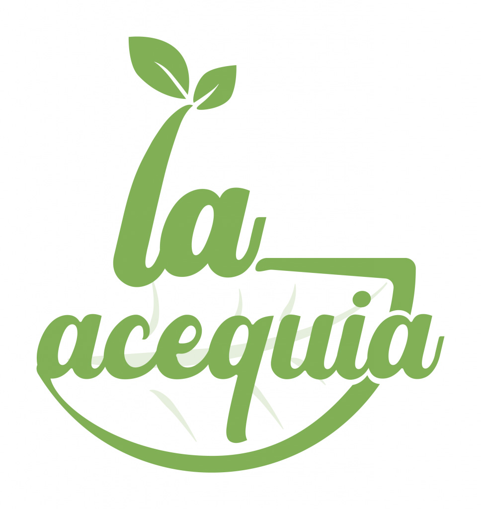
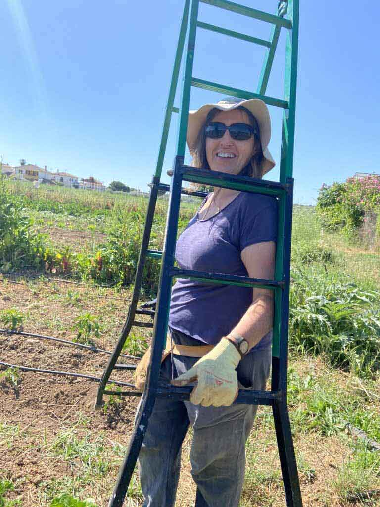
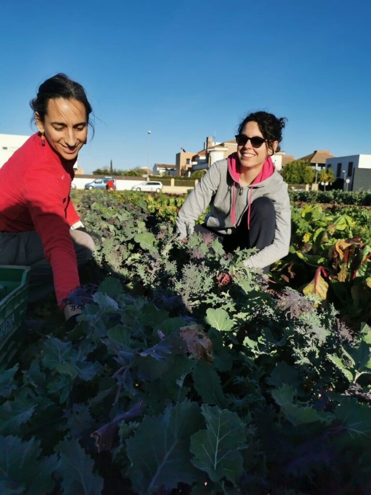
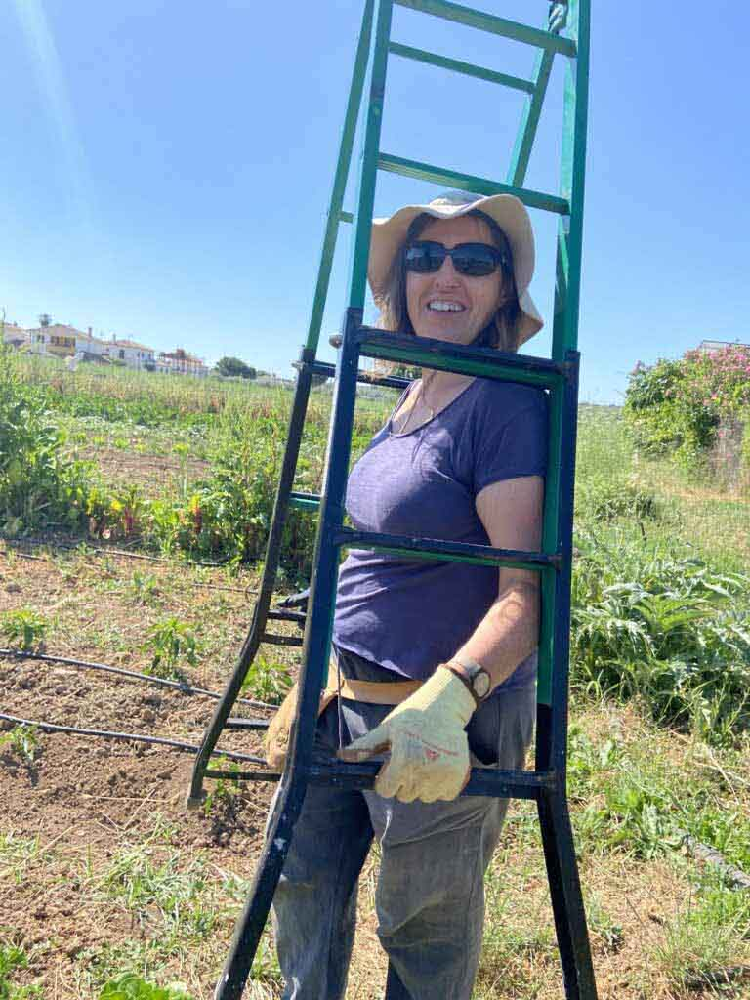
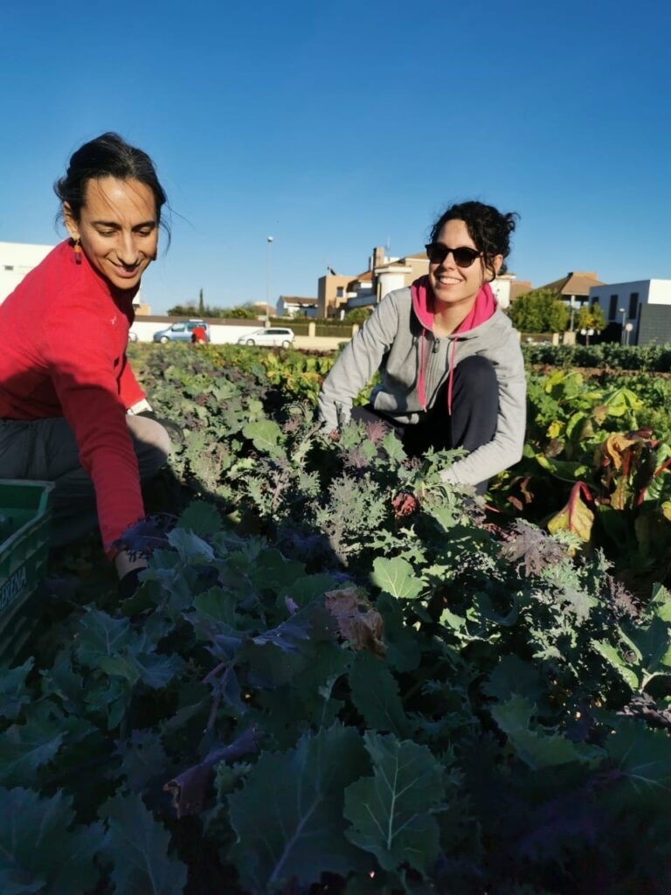

ZONA PRINCIPAL


Puedes seguir nuestro día a día y las actividades que organizamos a través de las redes sociales.
Si te interesa participar como miembro de La acequia o resolver cualquier duda o consulta escríbenos a: laacequia.cordoba@gmail.com
... o si prefieres conocernos en persona y ver como funcionamos, todos los jueves realizamos el reparto de verdura entre los miembros de La acequia en un barrio de Córdoba (consúltanos).



 


